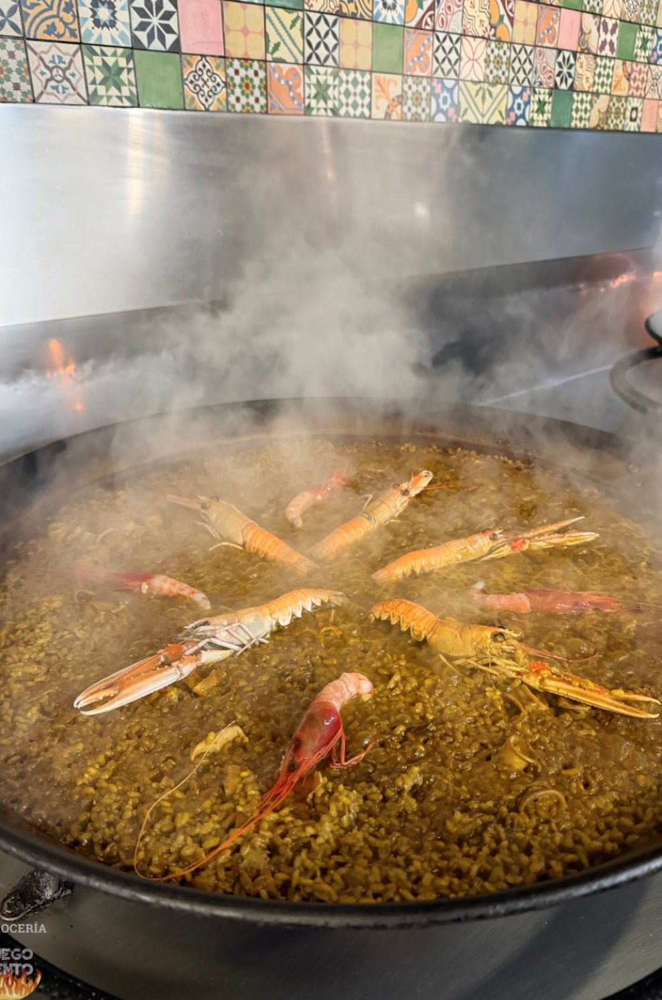
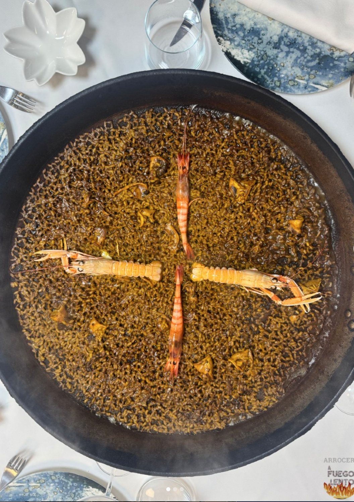
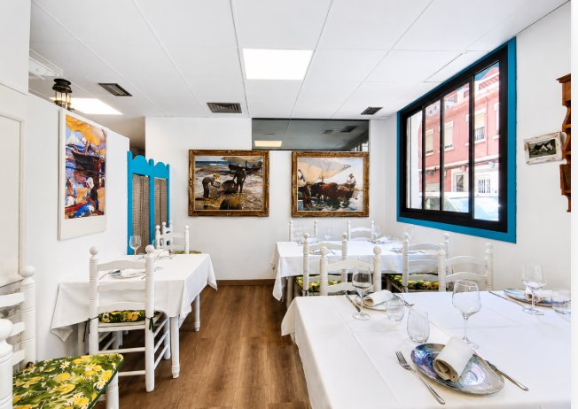
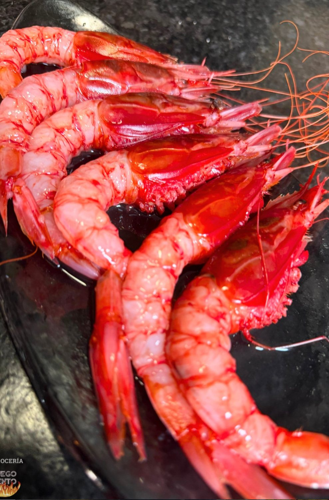
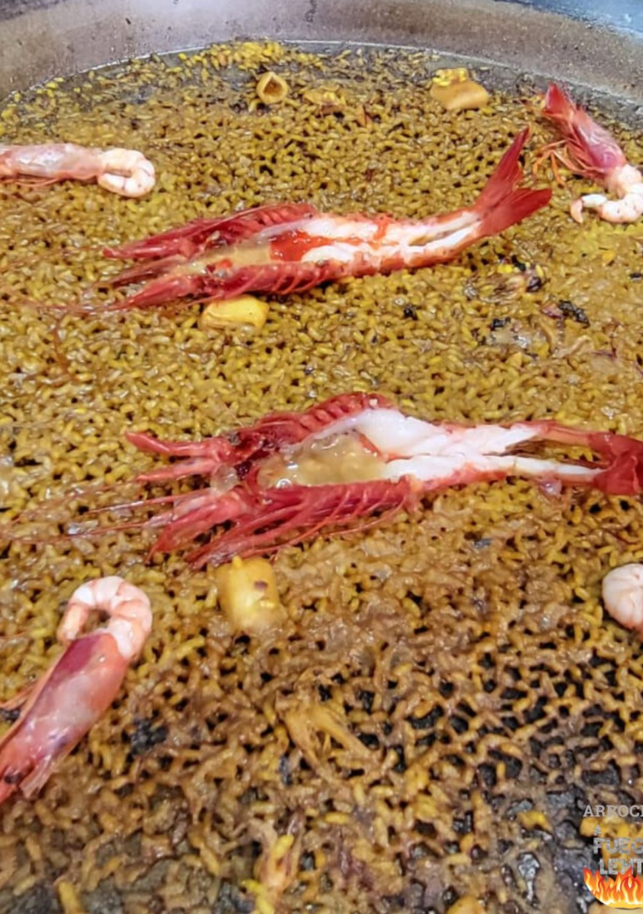
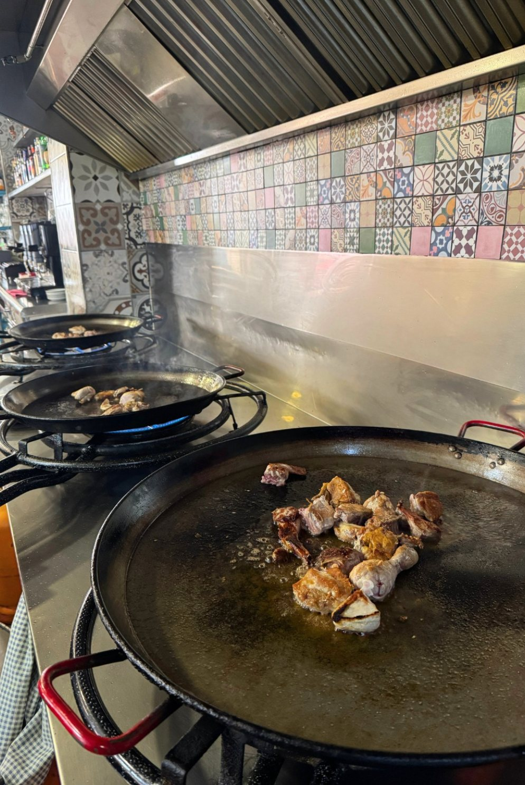

Poblats Marítims · Valencia
Arrocería A Fuego Lento
Risi valenzani cucinati al momento
Paella, risi all'onda e fideuà al fuoco, con gambero rosso, salagioni e un tocco siciliano. A due strade dalla spiaggia della Malvarrosa.
Dove siamo
Carrer d'Antonio Ponz, 56
46011 Valencia
Poblats Marítims
Prenotazioni
I piatti di riso
Minimo 2 persone.
Si preparano al momento: calcola 30-40 minuti.
La casa
Il riso comanda
A Fuego Lento è un ristorante di riso a Poblats Marítims, a due strade dalla spiaggia della Malvarrosa. I risotti si preparano uno alla volta, al momento — per questo ci vuole una buona mezz'ora, ed è per questo che vengono come devono venire.
Nel menù convivono il riso valenzano di sempre e qualche tocco siciliano, come la titaina con caponata e ventresca di tonno bianco del nord.

Risotti e fideuà
Paella, risi all'onda e fideuà valenzana, preparati al momento da condividere.
Scopri →
La sala
Una sala luminosa con tovaglie bianche nel cuore di Poblats Marítims, a due passi dalla Malvarrosa.
Scopri →
Prodotto di mare
Gambero rosso, vongole, mosciame e uova di pesce: prodotto di mare trattato con rispetto.
Scopri →
Risotti
Quello che va per la maggiore
Tutti per un minimo di due persone, con il prezzo a persona. Si preparano al momento, quindi è meglio avvisare al momento della prenotazione.
- Paella valenciana (su ordinazione)18,50 €
- Arroz del senyoret19,00 €
- Arroz negro20,00 €
- Arroz de marisco20,50 €
- Fideuá pelada Nº219,00 €
- Fideuá de marisco Nº220,50 €
- Arroz de magret de pato (su ordinazione)24,00 €
- Arroz de bogavante o langosta (su ordinazione)Secondo il mercato

La cucina
Al fuoco, uno alla volta
Niente risotti preparati in anticipo: ogni paella inizia quando la ordini. È più lento, ma è l'unico modo perché il chicco venga come deve.
- Risotti e fideuà, minimo 2 persone
- Quelli su ordinazione, meglio avvisare alla prenotazione
- Gambero rosso, vongole e salagioni di stagione
Prenotazioni
Ti teniamo il tavolo
Prenota per telefono e ti seguiamo direttamente. Se vuoi uno dei risotti su ordinazione, dillo al momento della prenotazione e lo concordiamo.